<title>Algorithm 1 filmstrips</title>
<link rel="stylesheet" href="https://fonts.googleapis.com/css2?family=IBM+Plex+Sans:wght@400;500;600&family=IBM+Plex+Mono:wght@400;500&display=swap">

<style>
:root{--bg:#f7f6f2;--ink:#1e1e1c;--muted:#5f5d57;--rule:#dcd9d0;--accent:#c8102e;--card:#ffffff;--code:#efece4;}
@media (prefers-color-scheme: dark){:root:not([data-theme="light"]){--bg:#16171a;--ink:#ecebe6;--muted:#a3a19a;--rule:#33353a;--accent:#ff5c6e;--card:#1e2024;--code:#26282d;}}
:root[data-theme="dark"]{--bg:#16171a;--ink:#ecebe6;--muted:#a3a19a;--rule:#33353a;--accent:#ff5c6e;--card:#1e2024;--code:#26282d;}
body{background:var(--bg);color:var(--ink);font-family:"IBM Plex Sans",system-ui,sans-serif;font-size:16px;line-height:1.5;margin:0;padding:0 20px;padding-block:24px 64px;}
main{max-width:1480px;margin:0 auto;}
h1{font-size:1.7rem;font-weight:600;line-height:1.2;margin:0 0 6px;text-wrap:balance;}
h2{font-size:1.25rem;font-weight:600;margin:48px 0 6px;padding-top:18px;border-top:1px solid var(--rule);text-wrap:balance;}
h3{font-size:1.05rem;font-weight:600;margin:28px 0 4px;}
p{max-width:78ch;margin:6px 0;}
ul{max-width:78ch;padding-left:1.2em;} li{margin:4px 0;}
.lede{color:var(--muted);}
code,.path{font-family:"IBM Plex Mono",ui-monospace,monospace;font-size:0.86em;}
code{background:var(--code);padding:1px 5px;border-radius:3px;}
table{border-collapse:collapse;margin:14px 0 10px;font-size:0.93rem;}
th,td{text-align:left;padding:6px 14px 6px 0;border-bottom:1px solid var(--rule);vertical-align:top;}
th{font-weight:500;color:var(--muted);}
td.num{font-variant-numeric:tabular-nums;font-family:"IBM Plex Mono",ui-monospace,monospace;font-size:0.9em;white-space:nowrap;}
.wrap{overflow-x:auto;}
nav{display:flex;flex-wrap:wrap;gap:6px 18px;margin:14px 0 0;font-size:0.93rem;}
nav a{color:var(--accent);text-decoration:none;}
nav a:hover,nav a:focus{text-decoration:underline;}
figure{margin:22px 0 0;display:flex;flex-direction:column;gap:8px;}
figcaption{max-width:90ch;font-size:0.95rem;}
.eyebrow{display:inline-block;font-family:"IBM Plex Mono",ui-monospace,monospace;font-size:0.78em;letter-spacing:0.04em;text-transform:uppercase;color:var(--accent);margin-right:10px;}
.path{display:block;color:var(--muted);margin-top:2px;}
figure img{max-width:100%;height:auto;display:block;background:var(--card);border:1px solid var(--rule);}
a:focus-visible{outline:2px solid var(--accent);outline-offset:2px;}
</style>
<main>
<h1>One CEM planning iteration on the braced lean: filmstrips for Algorithm 1</h1>
<p class="lede">Talk assets, 2026-09-21. Every figure is rendered from what the CEM planner held at one plan tick of <code>lean_bench</code>
(strategy 25, 0.985 m slab, seed 1, deploy gains, 33 plans/s, N = 20, k = 6, 1 s horizon at 10 ms, 3 knots, zero-order hold):
the centre spline and its rollout, the sampled Σ and ε(k), all 20 candidate rollouts with J(k), the elite set, and the folded spline rolled out from the same x₀.
Full-resolution PNG and PDF sit next to the source: <code>mujoco_mpc/studies/alg1_filmstrips/figs/&lt;run&gt;/</code>, with a <code>clean/</code> copy of each figure without title text for slides.
Method and regeneration: <code>studies/alg1_filmstrips/README.md</code>. These ticks are the lean onset (t = 12.5–13.5 s, 0.5–1.5 s into the lean rung), the transition the lean-onset falls come from;
the companion page <code>20260921-alg1_brace_contact.html</code> does the same at the brace-contact moment.</p>
<nav>
<a href="#cem_stdmin05_s1">σ floor 50 mrad, t = 13.50 s</a>
<a href="#cem_s1">σ floor 10 mrad (deployed), t = 12.51 s</a>
<a href="#extra">σ comparison and the collapsed fan</a>
</nav>

<div class="wrap"><table>
<tr><th>run</th><th>std_min</th><th>outcome by 30 s</th><th>tick shown</th><th>J(θ̄)</th><th>samples best / worst</th><th>fold</th><th>pelvis spread mean / max</th><th>hand spread mean / max</th></tr>
<tr><td><code>cem_stdmin05_s1</code></td><td class="num">0.05 rad</td><td>lean 12.58 s, reach 25.02 s, no fall</td><td class="num">13.50 s</td><td class="num">186.0</td><td class="num">192.4 / 340.1</td><td class="num">180.7</td><td class="num">103 / 217 mm</td><td class="num">126–136 / 251–285 mm</td></tr>
<tr><td><code>cem_s1</code> (deployed)</td><td class="num">0.01 rad</td><td>lean 12.00 s, reach 24.01 s, release 27.10 s, no fall</td><td class="num">12.51 s</td><td class="num">87.0</td><td class="num">78.7 / 123.1</td><td class="num">81.5</td><td class="num">25 / 54 mm</td><td class="num">36–42 / 89–98 mm</td></tr>
<tr><td><code>cem_stdmin03_s1</code></td><td class="num">0.03 rad</td><td>backward fall at 14.74 s (lean onset)</td><td class="num">13.50 s</td><td class="num">452.3</td><td class="num">430.1 / 531.9</td><td class="num">443.9</td><td class="num">61 / 130 mm</td><td class="num">67–71 / 125–161 mm</td></tr>
</table></div>
<p>Spread is the distance at h = 1 s between each candidate's body position and θ̄'s rollout, over the 20 candidates.
Two things the pictures show that the tables did not: the third knot sits at h = 1.0 s and under the hold acts on the last 10 ms only, so nothing selects on it and it random-walks under the refit (largest entry of Σ at every tick; the spline panels let it clip);
and every rollout's running cost is sawtoothed for the first 0.5 s and smooth after the second knot, which is not investigated here.</p>
<h2 id="cem_stdmin05_s1">σ floor 50 mrad, t = 13.50 s (primary set of this page)</h2><p>std_min 0.05 rad, five times the deployed floor and the top of the CEM basin that still completes ≥ 4/6 at 33 plans/s.
Chosen because the fan is wide enough to read: the 20 rollouts end 103 mm apart at the pelvis on average (217 max), 126–136 mm at the hands (251–285 max).
J(θ̄) 186.0; samples 192.4–340.1; fold 180.7, below every single sample. Σ used 50–185 mrad.</p>

<figure>
  <figcaption><span class="eyebrow">line 1</span><strong>θ̄ ← Center(θ)</strong> Six frames of θ̄&#x27;s rollout over the 1 s horizon (faint grey = x₀), its running cost, and the spline θ̄ itself for eight joints. 
  <span class="path">figs/cem_stdmin05_s1/t13.5_A_center.png · clean/</span></figcaption>
  <a href="media/alg1_filmstrips/cem_stdmin05_s1__t13.5_A_center.jpg" target="_blank" rel="noopener">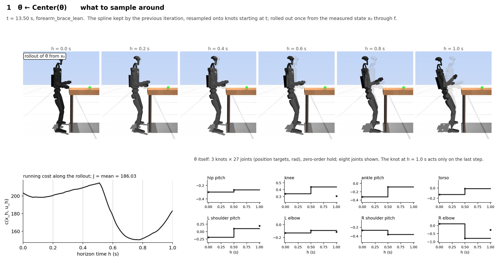</a>
</figure>

<figure>
  <figcaption><span class="eyebrow">lines 3–4</span><strong>ε(k) ~ N(0, Σ), θ(k) ← θ̄ + ε(k)</strong> Σ as a 3 knots × 27 joints heatmap of the std sampled at this tick (refit elite std, floored at std_min), and the 20 perturbed splines around θ̄. 
  <span class="path">figs/cem_stdmin05_s1/t13.5_B_spread.png · clean/</span></figcaption>
  <a href="media/alg1_filmstrips/cem_stdmin05_s1__t13.5_B_spread.jpg" target="_blank" rel="noopener">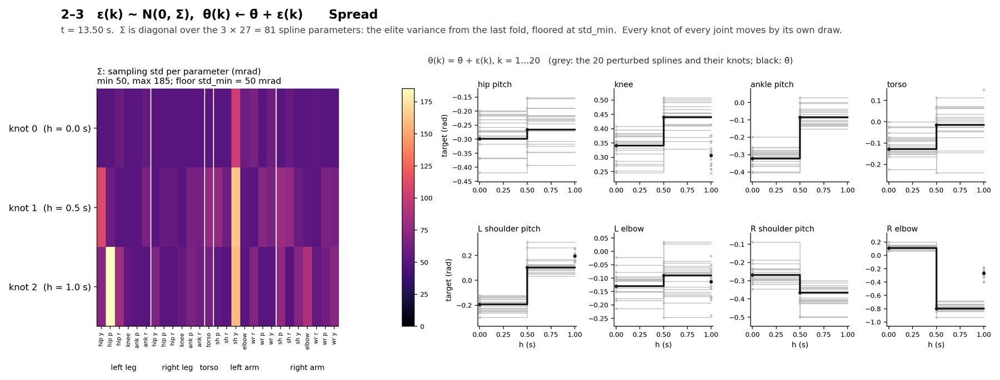</a>
</figure>

<figure>
  <figcaption><span class="eyebrow">line 5</span><strong>roll out f from x₀, all 20 at once</strong> The fan as a filmstrip: every rollout at h = 0.25, 0.5, 0.75, 1.0 s, tinted by J(k) (yellow = lowest); black = θ̄&#x27;s rollout; traces = hands and pelvis. 
  <span class="path">figs/cem_stdmin05_s1/t13.5_C3_fan_strip.png · clean/</span></figcaption>
  <a href="media/alg1_filmstrips/cem_stdmin05_s1__t13.5_C3_fan_strip.jpg" target="_blank" rel="noopener">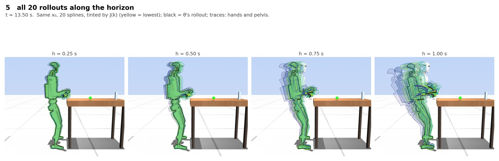</a>
</figure>

<figure>
  <figcaption><span class="eyebrow">lines 5–6</span><strong>J(k) ← mean cost</strong> All 20 end states on one image next to the sorted J(k) bars. 
  <span class="path">figs/cem_stdmin05_s1/t13.5_C1_rollouts_fan.png · clean/</span></figcaption>
  <a href="media/alg1_filmstrips/cem_stdmin05_s1__t13.5_C1_rollouts_fan.jpg" target="_blank" rel="noopener">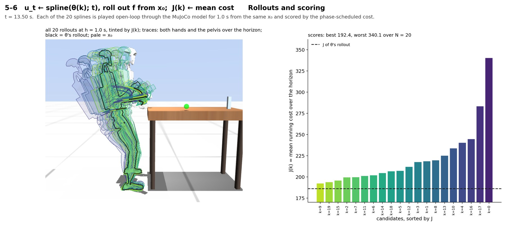</a>
</figure>

<figure>
  <figcaption><span class="eyebrow">lines 5–6</span><strong>four rollouts, frame by frame</strong> Best, two mid-ranked and worst candidate as filmstrips with their running cost against θ̄&#x27;s. 
  <span class="path">figs/cem_stdmin05_s1/t13.5_C2_rollouts_strips.png · clean/</span></figcaption>
  <a href="media/alg1_filmstrips/cem_stdmin05_s1__t13.5_C2_rollouts_strips.jpg" target="_blank" rel="noopener">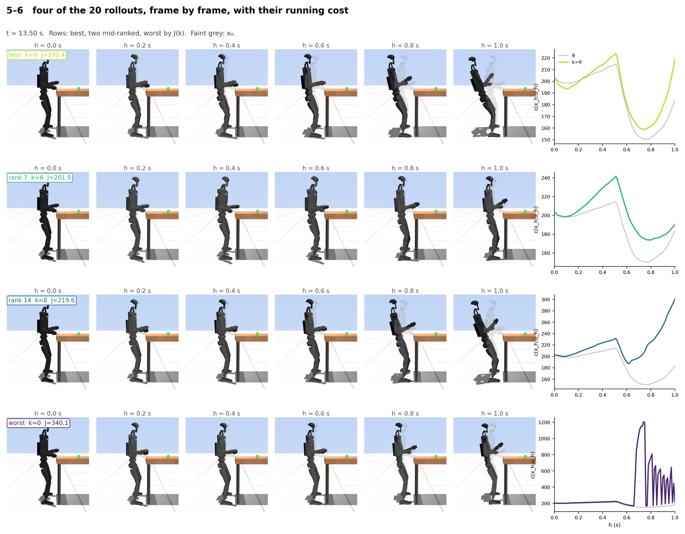</a>
</figure>

<figure>
  <figcaption><span class="eyebrow">line 8</span><strong>θ ← Fold({θ(k)}, {J(k)})</strong> The 6 elites in the J bars, the elite fan with the rollout of their mean (red outline), and the elite splines → mean for eight joints. 
  <span class="path">figs/cem_stdmin05_s1/t13.5_D_fold.png · clean/</span></figcaption>
  <a href="media/alg1_filmstrips/cem_stdmin05_s1__t13.5_D_fold.jpg" target="_blank" rel="noopener">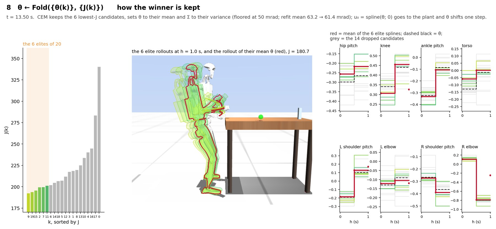</a>
</figure>

<figure>
  <figcaption><span class="eyebrow">line 8</span><strong>θ̄&#x27;s rollout over θ&#x27;s rollout</strong> Both from the same x₀; the difference is one iteration. 
  <span class="path">figs/cem_stdmin05_s1/t13.5_D2_fold_strips.png · clean/</span></figcaption>
  <a href="media/alg1_filmstrips/cem_stdmin05_s1__t13.5_D2_fold_strips.jpg" target="_blank" rel="noopener"></a>
</figure>

<figure>
  <figcaption><span class="eyebrow">all</span><strong>the four stages on one panel</strong> Centre, spread, fan, fold. 
  <span class="path">figs/cem_stdmin05_s1/t13.5_E_overview.png · clean/</span></figcaption>
  <a href="media/alg1_filmstrips/cem_stdmin05_s1__t13.5_E_overview.jpg" target="_blank" rel="noopener">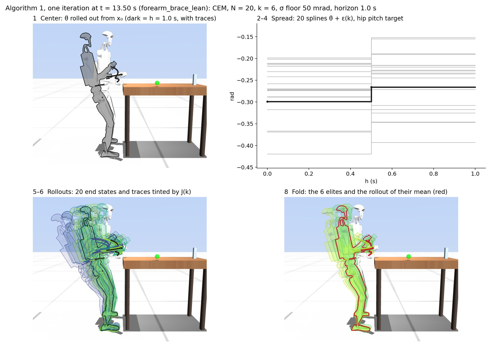</a>
</figure>
<h2 id="cem_s1">σ floor 10 mrad (as deployed), t = 12.51 s</h2><p>The robot's own setting, 0.5 s into the lean rung. Pelvis spread 25 mm mean / 54 max, hands 36–42 / 89–98.
J(θ̄) 87.0; samples 78.7–123.1; fold 81.5. Σ used 10–127 mrad (hip pitch and torso at knots 0–1 sit at 20–60; the 127 is the h = 1 s knot).</p>

<figure>
  <figcaption><span class="eyebrow">line 1</span><strong>θ̄ ← Center(θ)</strong> Six frames of θ̄&#x27;s rollout over the 1 s horizon (faint grey = x₀), its running cost, and the spline θ̄ itself for eight joints. 
  <span class="path">figs/cem_s1/t12.5_A_center.png · clean/</span></figcaption>
  <a href="media/alg1_filmstrips/cem_s1__t12.5_A_center.jpg" target="_blank" rel="noopener">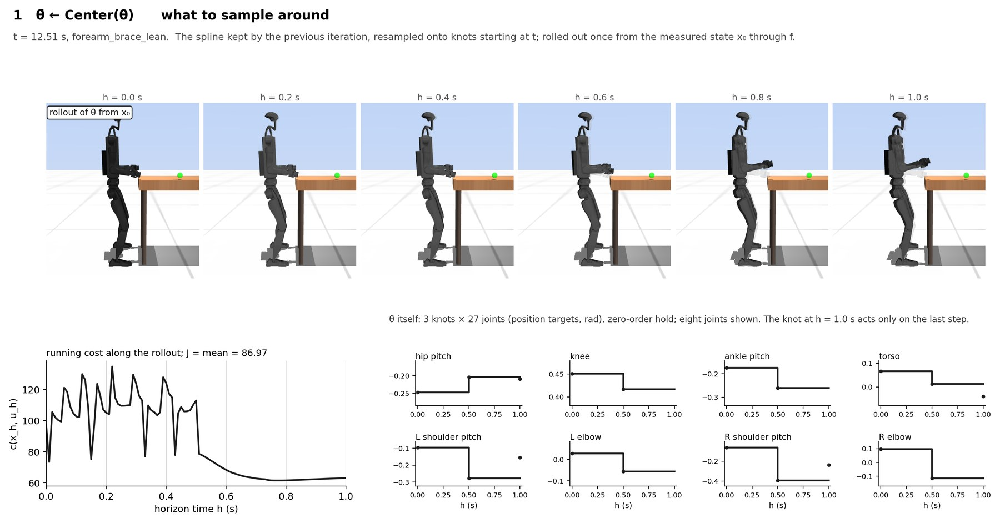</a>
</figure>

<figure>
  <figcaption><span class="eyebrow">lines 3–4</span><strong>ε(k) ~ N(0, Σ), θ(k) ← θ̄ + ε(k)</strong> Σ as a 3 knots × 27 joints heatmap of the std sampled at this tick (refit elite std, floored at std_min), and the 20 perturbed splines around θ̄. 
  <span class="path">figs/cem_s1/t12.5_B_spread.png · clean/</span></figcaption>
  <a href="media/alg1_filmstrips/cem_s1__t12.5_B_spread.jpg" target="_blank" rel="noopener">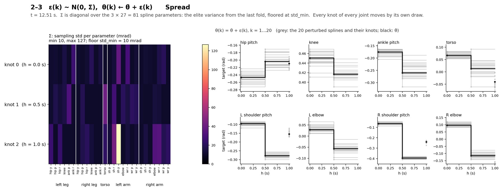</a>
</figure>

<figure>
  <figcaption><span class="eyebrow">line 5</span><strong>roll out f from x₀, all 20 at once</strong> The fan as a filmstrip: every rollout at h = 0.25, 0.5, 0.75, 1.0 s, tinted by J(k) (yellow = lowest); black = θ̄&#x27;s rollout; traces = hands and pelvis. 
  <span class="path">figs/cem_s1/t12.5_C3_fan_strip.png · clean/</span></figcaption>
  <a href="media/alg1_filmstrips/cem_s1__t12.5_C3_fan_strip.jpg" target="_blank" rel="noopener">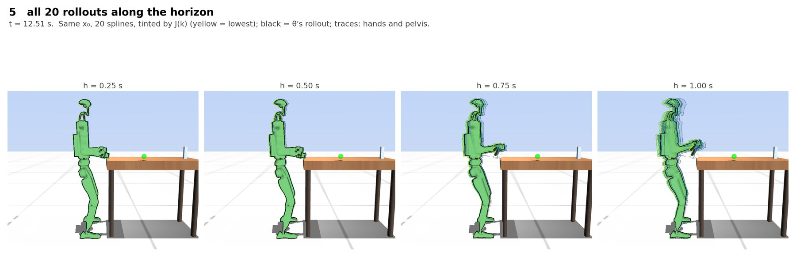</a>
</figure>

<figure>
  <figcaption><span class="eyebrow">lines 5–6</span><strong>J(k) ← mean cost</strong> All 20 end states on one image next to the sorted J(k) bars. 
  <span class="path">figs/cem_s1/t12.5_C1_rollouts_fan.png · clean/</span></figcaption>
  <a href="media/alg1_filmstrips/cem_s1__t12.5_C1_rollouts_fan.jpg" target="_blank" rel="noopener">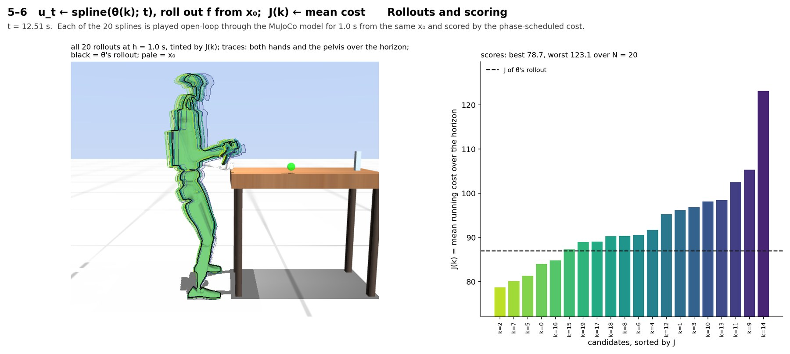</a>
</figure>

<figure>
  <figcaption><span class="eyebrow">lines 5–6</span><strong>four rollouts, frame by frame</strong> Best, two mid-ranked and worst candidate as filmstrips with their running cost against θ̄&#x27;s. 
  <span class="path">figs/cem_s1/t12.5_C2_rollouts_strips.png · clean/</span></figcaption>
  <a href="media/alg1_filmstrips/cem_s1__t12.5_C2_rollouts_strips.jpg" target="_blank" rel="noopener">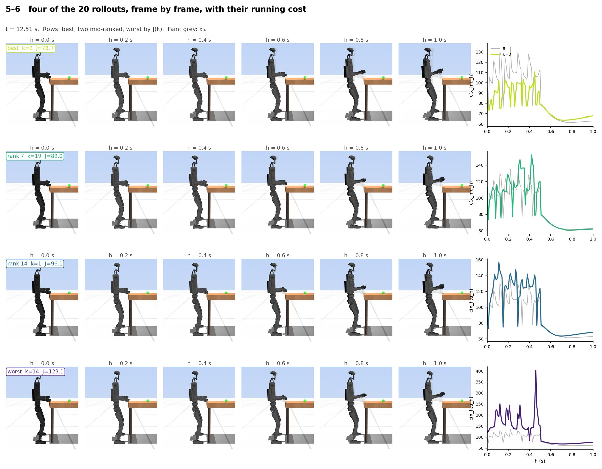</a>
</figure>

<figure>
  <figcaption><span class="eyebrow">line 8</span><strong>θ ← Fold({θ(k)}, {J(k)})</strong> The 6 elites in the J bars, the elite fan with the rollout of their mean (red outline), and the elite splines → mean for eight joints. 
  <span class="path">figs/cem_s1/t12.5_D_fold.png · clean/</span></figcaption>
  <a href="media/alg1_filmstrips/cem_s1__t12.5_D_fold.jpg" target="_blank" rel="noopener">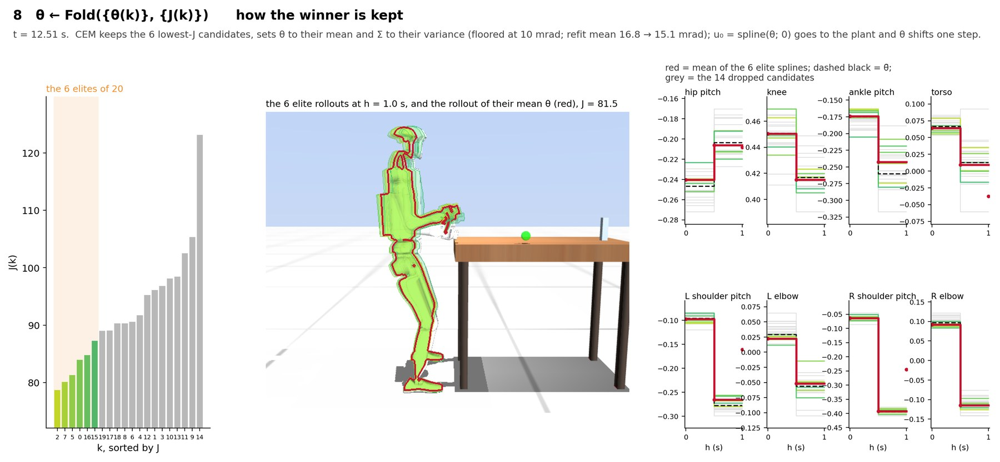</a>
</figure>

<figure>
  <figcaption><span class="eyebrow">line 8</span><strong>θ̄&#x27;s rollout over θ&#x27;s rollout</strong> Both from the same x₀; the difference is one iteration. 
  <span class="path">figs/cem_s1/t12.5_D2_fold_strips.png · clean/</span></figcaption>
  <a href="media/alg1_filmstrips/cem_s1__t12.5_D2_fold_strips.jpg" target="_blank" rel="noopener">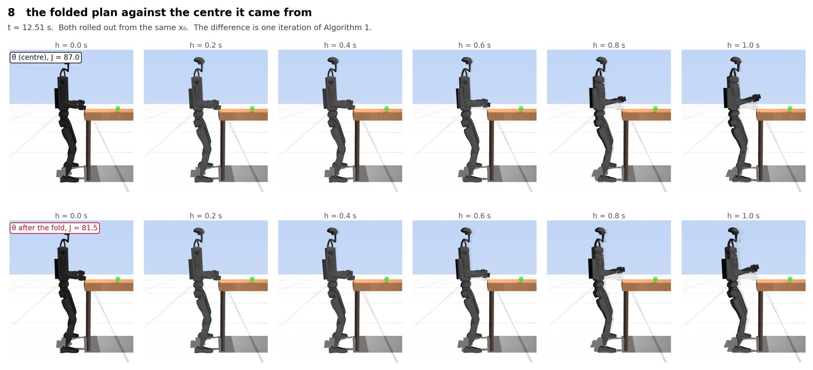</a>
</figure>

<figure>
  <figcaption><span class="eyebrow">all</span><strong>the four stages on one panel</strong> Centre, spread, fan, fold. 
  <span class="path">figs/cem_s1/t12.5_E_overview.png · clean/</span></figcaption>
  <a href="media/alg1_filmstrips/cem_s1__t12.5_E_overview.jpg" target="_blank" rel="noopener">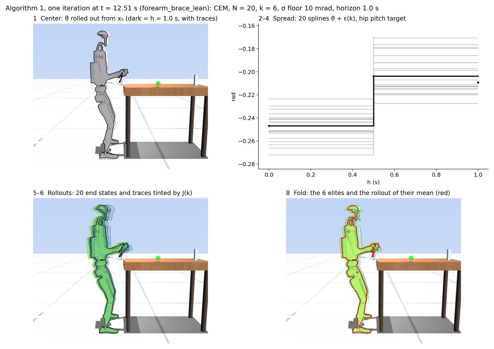</a>
</figure>
<h2 id="extra">σ comparison and the collapsed fan</h2>

<figure>
  <figcaption><span class="eyebrow">line 5</span><strong>the fan at three sampling widths</strong> Separate runs of the same seed, each at t = 12.51 s, all 20 rollouts at h = 1 s. The 30 mrad run is already in its lean-onset backward fall: every rollout predicts it, and the plant goes over at 14.74 s.
  <span class="path">figs/compare/t12.5_F_sigma_compare.png · clean/</span></figcaption>
  <a href="media/alg1_filmstrips/compare__t12.5_F_sigma_compare.jpg" target="_blank" rel="noopener">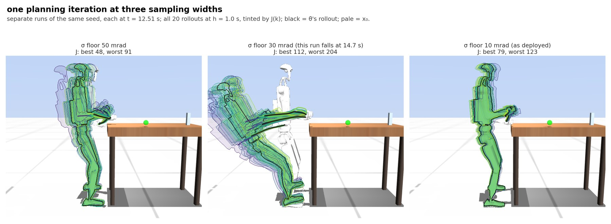</a>
</figure>

<figure>
  <figcaption><span class="eyebrow">line 5</span><strong>roll out f from x₀, all 20 at once</strong> The fan as a filmstrip: every rollout at h = 0.25, 0.5, 0.75, 1.0 s, tinted by J(k) (yellow = lowest); black = θ̄&#x27;s rollout; traces = hands and pelvis. σ floor 30 mrad, t = 13.50 s: all 20 rollouts topple backward within the horizon; no candidate recovers. The plant fell 1.2 s later.
  <span class="path">figs/cem_stdmin03_s1/t13.5_C3_fan_strip.png · clean/</span></figcaption>
  <a href="media/alg1_filmstrips/cem_stdmin03_s1__t13.5_C3_fan_strip.jpg" target="_blank" rel="noopener">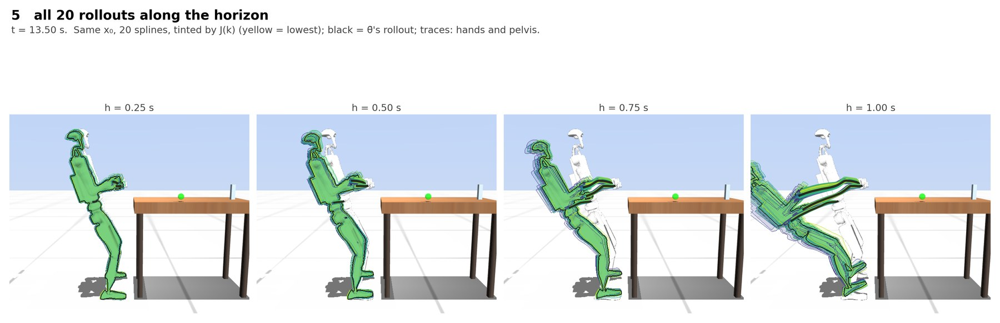</a>
</figure>

<figure>
  <figcaption><span class="eyebrow">lines 5–6</span><strong>J(k) ← mean cost</strong> All 20 end states on one image next to the sorted J(k) bars. The same tick, scored: J spans 430–532 and the sort no longer separates recoveries from falls, because there are none.
  <span class="path">figs/cem_stdmin03_s1/t13.5_C1_rollouts_fan.png · clean/</span></figcaption>
  <a href="media/alg1_filmstrips/cem_stdmin03_s1__t13.5_C1_rollouts_fan.jpg" target="_blank" rel="noopener">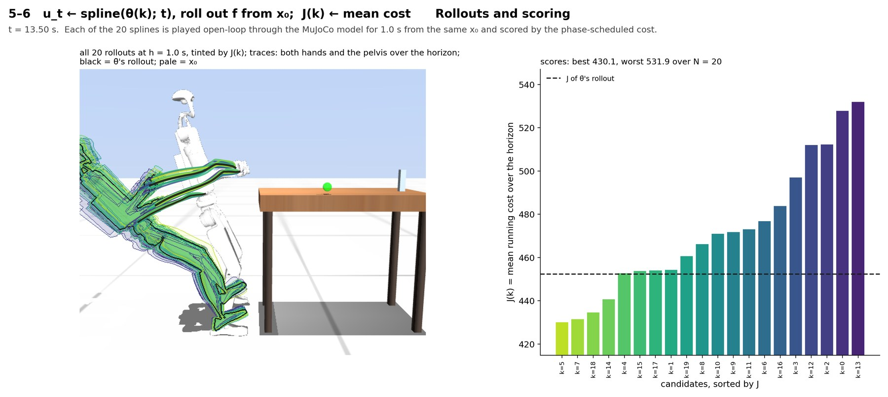</a>
</figure>

</main>